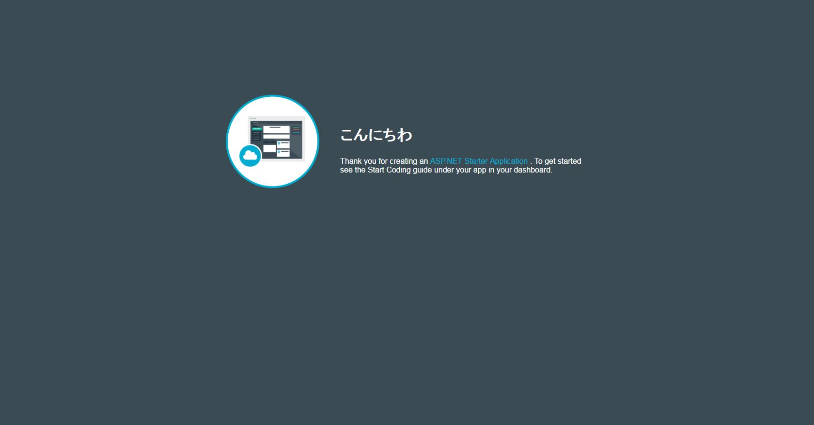

前回はアプリを動かしましたが、コミットによって動かなくなりました。
問題の切り分け
前回は、index.htmlとglobal.jsonを書き換えました。
index.htmlはHello Worldという文字列を変更しただけなので、これが動かなくなった原因とは思えません。
となると、global.jsonに対して適用した、.NET Core SDKの変更が問題に見えます。
というわけで、global.jsonの変更だけを元に戻してコミット、プッシュし、再度Bluemix上のアプリを確認します。

It works!!
問題ないです。
これで、問題が.NET Core SDKのバージョンが問題になっていることは確定です。
.NET Coreの変更
.NET Core SDKを1.0.0-preview1-002702から1.0.0-preview2-003121に変更したことが問題なのはわかりました。
実行環境に、1.0.0-preview2-003121がインストールされていないのが問題ならば選択肢は2つです。
- ローカル環境の.NET Core SDKのバージョンをBluemixに合わせる
- Bluemixの.NET Core SDKのバージョンをローカル環境に合わせる
が、前者はありえません。
.NET Core SDKの最新版が出るたびに、指をくわえて待つというのはあまりにもチキンです。
なので、ここはBluemixの環境を変更します。
Google先生に聞いてみても、芳しい結果が得られませんでしたが、公式ドキュメントのWhat’s new in Bluemixに気になる記述が。
Upgrade to the ASP.NET Core buildpack New as of: 12 July 2016 This buildpack makes the .NET Core V1.0 and .NET Core SDK V1.0 Preview 2 available in Bluemix. Existing RC2 apps will continue to work with this buildpack as long as you specify the correct SDK version in your global.json file.
buildpackなるものが.NET Core V1.0とPreview2で利用可能になった、と言っています。
でも、1.0.0-preview2-003121にしたのに動かないじゃん….
What is buildpack?
buildpackとは、まいち様によれば、
実行環境を構築するときの振る舞いを指定するもの。
とあります。
Cloud Foundryの公式ドキュメントでbuildpackの説明を見ると
Buildpacks provide framework and runtime support for your applications. Buildpacks typically examine user-provided artifacts to determine what dependencies to download and how to configure applications to communicate with bound services.
Buildpackはアプリケーションのためのフレームワークと実行環境のサポートを提供します。通常、Buildpackは、ダウンロードのための何に依存しているかを決定するため、境界のサービス群とやりとりするためにアプリケーションをどのように設定するか、ユーザーが提供するアーティファクト(訳注:おそらく開発者が作成したアプリや成果物全般)を調査します。
とのこと。一言で言うなら、ランタイムと私は理解しました。
なので、このbuildpackを更新すれば動く、と考えました。
公式でPreview2のbuildpackが利用可能になった、というのはbuildpackが登場しただけで、アプリの実行環境のbuildpackは最新ではないよ、ということなのでしょう。
buildpackを更新
.NET Coreのbuildpackはgithubで開発されていました。

{kind=link}
README.mdに使い方(Usage)が書いてあります。
1 | cf push my_app -b https://github.com/cloudfoundry-community/dotnet-core-buildpack.git |
どうみても、cfって以前書いたCloud Foundry コマンドラインインターフェース (以下 CF CLI)です。
これを使えば、最新のbuildpackをgithubから引っ張ってきて更新してくれそうです。
なので、まずGithubからCF CLIをダウンロードします。これも前回書いたようにGithubにあります。
zipとインストーラがありますが、インストーラをお勧めします。
インストールはインストール先を指定するだけなので、省略。
インストール完了後、cfコマンドへのパスが通ります。
前述のcf.exeによるbuildpackの更新方法
1 | cf push <自分のアプリ> -b https://github.com/cloudfoundry-community/dotnet-core-buildpack.git |
を見ると、<自分のアプリ> が何を指すのかわかりません。
gitでクローンしたローカルフォルダなのか、Bluemix上のアプリのurlなのか。
なので、CF CLIを使った開発を見てみます。ダッシュボード上の「コーディングの開始」をクリックします。
{kind=link}
遷移先で、CF CLIの使い方が書いてあります。
{kind=link}
CF CLIの他にBluemix CLIなるものが必要な様子。
Bluemix CLI は、コマンド・ライン・インターフェースを介して、Bluemix 内のアプリケーション、仮想サーバー、コンテナー、およびその他のコンポーネントと対話するための一元化された手法を提供します。
また、特定の計算タイプと対話するときにも、Cloud Foundry、Docker、および OpenStack コミュニティーからコマンド・ライン・ツールを利用します。
Bluemix CLI は、これらのコミュニティー・ツールが使用されている場合の環境設定の操作に役立ちます。
なので、上記のコミュニティツール、この場合CF CLIがBluemixと対話するために必要な環境設定のサポートが必要なのでしょう。認証情報とか。
このツールをダウンロードします。インストーラしかないです。
Conclusion
長くなったので次回。